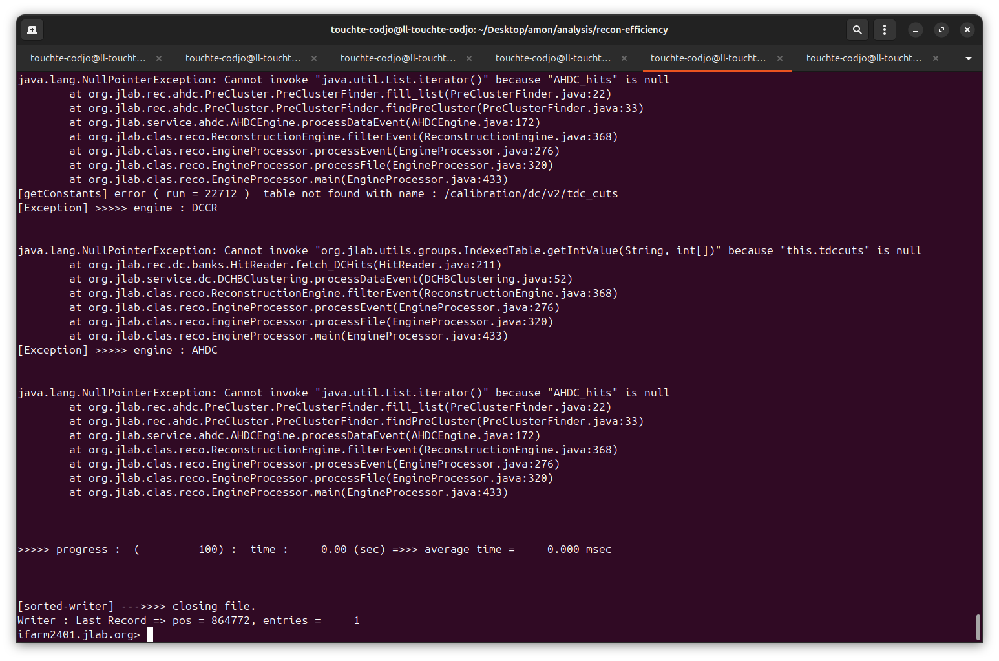
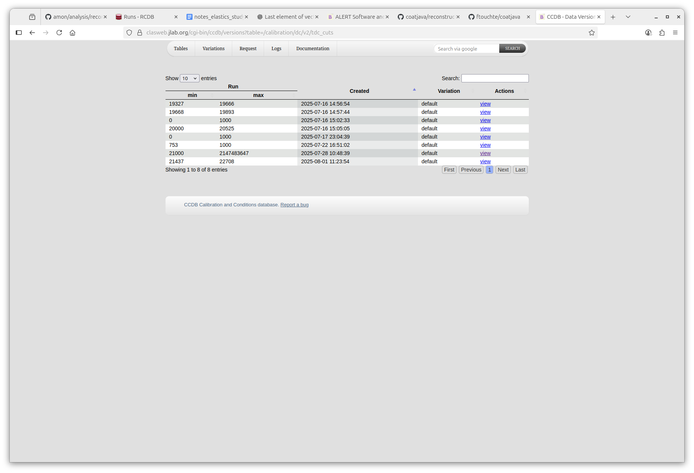

The DC recon failed the AHDC recon
Lognumber 33.
Submitted on Mon, 04 Aug 2025 - 17:22:56 CEST
Marker: coatjava
Send to:
Because DC is not working, I suspect we don't reconstruct REC::Particle or REC::Event.
That the reason why AHDC::hits is always empty. We require REC::Event !!!
I tested on run 22712.
The dc/v2/tdc_cuts ccdb ranges until run 22708.
Attachments (2)
1.

2.
